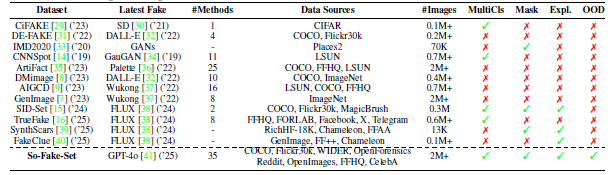
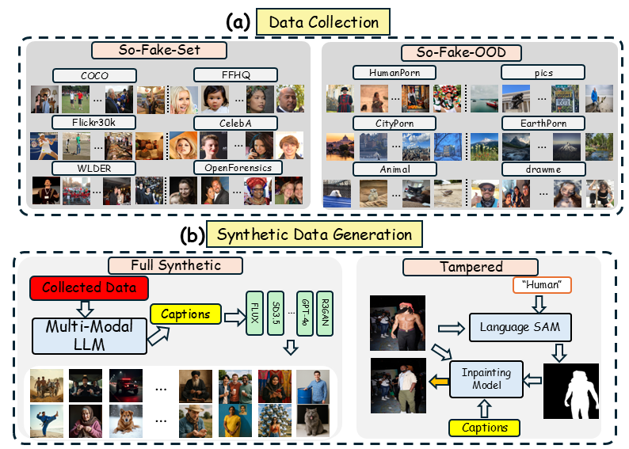
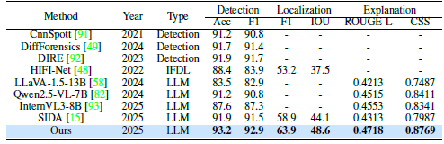

Overview of So-Fake Dataset. (a) Comparison of forgery detection methods from 2020 to 2025 shows our dataset includes the most recent and the largest number of methods. (b) So-Fake-Set covers diverse real social media scenarios, including 12 different categories. (c) Different generative methods and visual examples in So-Fake-Set and So-Fake-OOD.
Comparison with Existing Image Deepfake Datasets

Comparison with existing image forgery datasets. “–” in #Methods indicates the number of generative methods was not specified;
“#” denotes an exact count. Column abbreviations:
MultiCls = Multiclasses,
Expl. = Explanation,
OOD = Out-of-distribution benchmark.
Overview of Dataset Construction

Overview of dataset construction. (a) Data sources and visual examples for So-Fake-Set and So-Fake-OOD. (b) Generation process of full synthetic images (left) and tampered images (right).
Visual Cases
Figure: Visual Examples of Full Synthetic Images from So-Fake-OOD

This figure showcases diverse examples from So-Fake-OOD, a benchmark specifically curated to evaluate out-of-distribution generalization. These images are collected from real Reddit subreddits, capturing complex, authentic content across a wide range of topics. The diversity and realism of So-Fake-OOD present significant challenges for forgery detection models, making it ideal for testing robustness beyond curated datasets.
Figure: Visual Examples of Tampered Images from So-Fake-OOD

This figure showcases diverse examples from So-Fake-OOD, a benchmark specifically curated to evaluate out-of-distribution generalization. These images are collected from real Reddit subreddits, capturing complex, authentic content across a wide range of topics. The diversity and realism of So-Fake-OOD present significant challenges for forgery detection models, making it ideal for testing robustness beyond curated datasets.
Method: So-Fake-R1

(a): Overview of the So-Fake-R1 training process; \textbf{(b)}: The detailed So-Fake-R1 GRPO training process. The example shows a tampered image where a boy has been manipulated.
Video Presentation
Experiments

Performance comparison among different methods on So-Fake-Set.
Performance comparison on So-Fake-OOD with both zero-shot and fine-tune settings.
Visual Examples of So-Fake-R1

BibTeX
@misc{huang2024sidasocialmediaimage,
title={SIDA: Social Media Image Deepfake Detection, Localization and Explanation with Large Multimodal Model},
author={Zhenglin Huang and Jinwei Hu and Xiangtai Li and Yiwei He and Xingyu Zhao and Bei Peng and Baoyuan Wu and Xiaowei Huang and Guangliang Cheng},
year={2024},
eprint={2412.04292},
archivePrefix={arXiv},
primaryClass={cs.CV},
url={https://arxiv.org/abs/2412.04292},
}